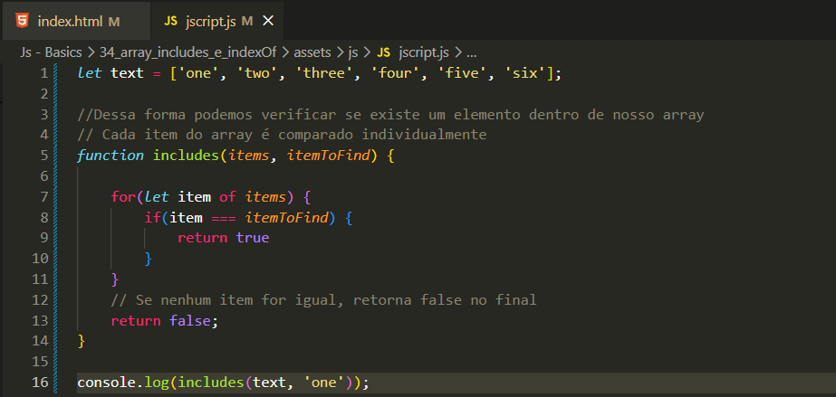
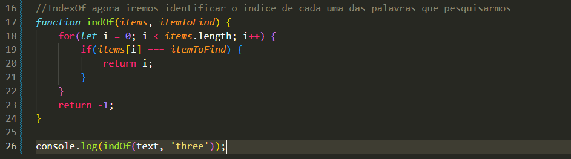

Array Includes e IndexOf
Intro
Agora iremos ver como encontrar elementos individuais dentro de um array.
Agora iremos ver como encontrar elementos individuais dentro de um array.
Iremos criar uma function chamada includes, onde com ela iremos identificar se ha ou nao um elemento especifico dentro de nosso array.


O indexOf é um método do JavaScript que retorna a posição (índice) de um elemento dentro de um array. Caso o elemento não exista, ele retorna -1.
Para verificar se um array contém um elemento específico, podemos usar os métodos includes e indexOf. Eles funcionam de forma semelhante aos métodos de string correspondentes:
Esses métodos são úteis quando precisamos localizar um elemento em um array. Para critérios de pesquisa mais complexos, podemos usar um loop e verificar as condições dentro dele usando if.